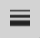

便签本页面编辑器
便笺本页面编辑器允许您编辑现有或新的便笺本页面。

便签本页眉工具栏
便签本页眉工具栏具有以下功能：
| 保存- 保存草稿本页面。 |
| 下载- 下载带有当前注释的草稿本页面。该页面可以下载为PNG图像或PDF文档。可以使用“导出为 PDF”选项表单自定义导出的 PDF 文档的布局。 |
转至 3D - 关闭便笺本页面并将Knowledge Book查看器的视图更改为创建便笺本页面的相同位置。 | |
| 撤消 -撤消注释创建、修改或删除操作。 |
| 重做 -重做 注释创建、修改或删除操作。您只能在撤消操作后才能重做操作。 |
| 便笺本页面名称- 便笺本页面的名称。名称不能为空。 |
| 查看更改历史记录- 显示一个框，其中显示草稿本页面的创建时间和创建者。还显示暂存器页面上次修改的时间和修改者。 |
| 退出- 退出便笺簿页面，导航回之前打开的页面。 |


便签本页面绘制模式工具栏
便签本页面绘制模式工具栏具有以下功能：
| 选择- 启动编辑器时的默认模式。用于选择已创建的注释。 |
| 自由绘制- 允许您自由绘制线条。该模式允许连续绘图。 |
| 文本- 允许您创建文本。创建文本后，模式将切换为选择。 |
| 矩形- 允许您创建矩形。创建矩形后，模式将切换为选择。 |
| 椭圆- 允许您创建椭圆。创建椭圆后，模式将切换为选择。 |
| 箭头- 允许您创建箭头。创建箭头后，模式将切换为选择。 |


便签本页面视图属性工具栏
便签本页面视图属性工具栏具有以下功能：
| 缩放- 允许您放大/缩小草稿本页面。缩放是通过滑块完成的，单击此功能后会出现滑块。 |

便签本页面编辑工具栏
便签本页面编辑工具栏具有以下功能：
| 字体系列- 允许您选择要使用的字体。默认为 Times New Roman。 |
| 字体颜色- 允许您修改文本的颜色。默认为红色。 |
| 文本大小- 允许您更改文本的大小。默认值为 30。最大值为 100。h |
斜体- 允许您将文本更改为斜体。 | |
| 粗体- 允许您将文本更改为粗体。 |
文本对齐方式- 允许您将文本对齐方式更改为右对齐、左对齐、居中对齐、两端对齐。默认值是保留的。 | |
填充颜色- 允许您更改文本块和形状的背景颜色。默认颜色是透明的。 | |
| 线条颜色- 允许您更改形状边框的颜色或箭头和自由绘制模式的线条颜色。默认值为红色。 |
 | 线条宽度- 允许您更改形状边框的大小或箭头和自由绘制模式的线条宽度。默认值为 2。最大值为 10。 |


在未选择注释时更改选项值将更改默认值。当选择注释时更改值将仅修改选定的注释。 |
另请参阅：便笺本首选项
飞涨
缩放功能有助于在草稿本页面上绘制详细注释。缩放功能的范围为 100%（默认视图）至 400%。
除了使用缩放滑块控件外，您还可以使用鼠标或触摸屏进行放大/缩小：
老鼠
- 使用滚轮放大/缩小。
- 按住鼠标中键，同时移动鼠标以平移放大视图。
触摸屏
- 使用两指 - 捏合手势进行放大，使用两指 - 捏合手势进行缩小。
- 使用两指滑动手势平移放大视图。
- 有关触摸屏手势的详细信息，请参阅查看器导航页面。